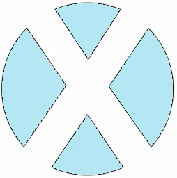
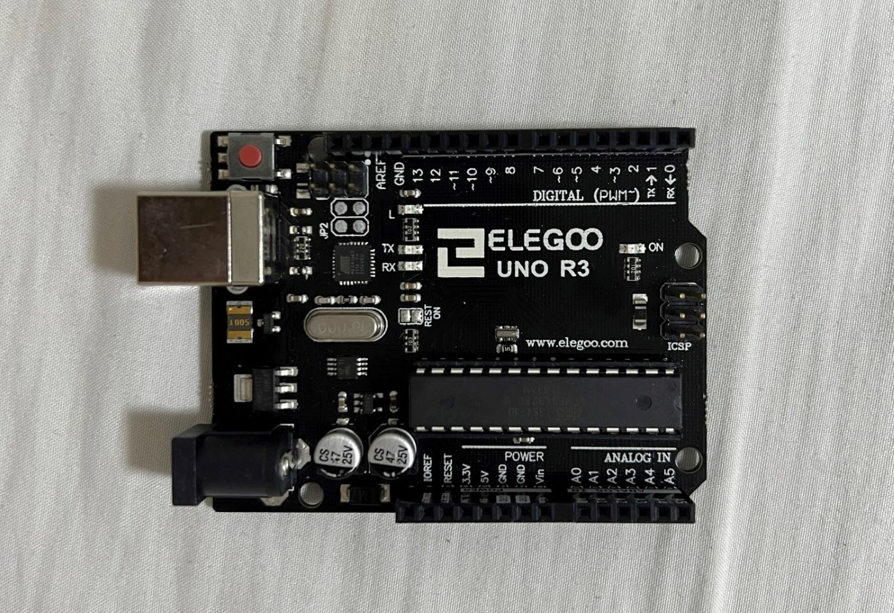
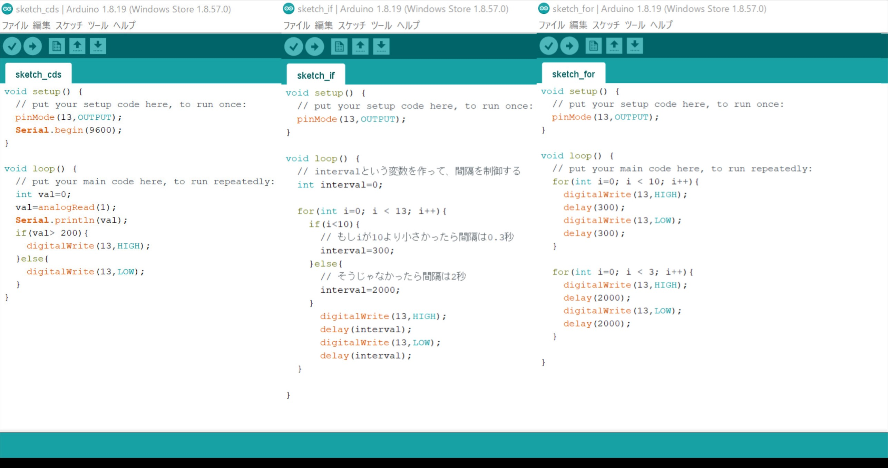

TOP
Digital Fabrication
Design SeminarⅠ・Ⅱ
Design Seminar Ⅲ・Ⅳ
第１回 Arduinoの基本
今回は、Arduinoの基本についてまとめる
参考資料

マイコンボードの基礎
Arduinoの基本設定
ArduinoでLチカ
センサー：Arduinoで明るさを測定
主な部品の説明
ブレッドボード
抵抗
コンデンサ
トランジスタ
ダイオード
部品の購入
秋月電子通商
マルツオンライン

Arduinoとは
入出力ポートがあるマイコンボード
環境整備
プログラムはArduinoの開発環境（ArduinoIDE）で作成
ArduinoIDEはArduinoの
ダウンロードサイト
からダウンロードできる
自分のOSにあったものをインストール
設定
Arduinoにはいろんな種類がある
どの種類のArduinoを使うかの設定はツールから設定できる
[ツール]→[ボード]→選ぶ
[ツール]→[シリアルポート]→[Arduino]で接続したUSBを選択

LED
LEDは長い方が[＋]・短い方が[ー]
[+]はアノード・[ー]はカソードという
LEDの接続
LEDの[＋]を１３番ピン・短い方[ー]をGNDにつなげる
Arduinoのプログラミング
setupは最初に一回だけ実行されるプログラム
loopはずっと繰り返し実行されるプログラム
命令文の最後には;(セミコロン)
pinMode：指定したピンの入力・出力を設定する
digitalWrite：デジタルピンの出力をLOWかHIGHで設定
delayは指定した時間待つ命令で、単位はミリ秒(ms)
配線
ブレッドボードを使って
Arduinoの5Vー10kΩの抵抗ーCdSセルーArduinoのGND
の流れができるような配線する
抵抗とcdsセルは片方が同じ列に配線が来るようにする
その後、10kΩの抵抗とCdSセルが繋がっている列からArduinoのA1ピンに配線する
アナログ・デジタル
デジタル：０or１しかない
アナログ：連続した値 ０～１の間もとれる
その他
val=analogRead(1)：アナログ１番ピン(A1)の値を読むこと
 ブレッドボード
ブレッドボード 秋月電子通商
ブレッドボード
秋月電子通商
秋月電子通商
ブレッドボード
秋月電子通商